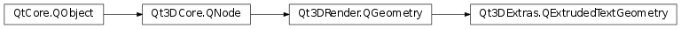

Qt3DExtras.QExtrudedTextGeometry¶
Synopsis¶
Functions¶
- def
extrusionLength() - def
font() - def
indexAttribute() - def
normalAttribute() - def
positionAttribute() - def
text()
Signals¶
- def
depthChanged(extrusionLength) - def
fontChanged(font) - def
textChanged(text)
Detailed Description¶
The
QExtrudedTextGeometryclass allows creation of a 3D extruded text in 3D space.The
QExtrudedTextGeometryclass is most commonly used internally by the QText3DMesh but can also be used in customQt3DRender.QGeometryRenderersubclasses.
-
class
PySide2.Qt3DExtras.Qt3DExtras.QExtrudedTextGeometry([parent=nullptr])¶ Parameters: parent – PySide2.Qt3DCore.Qt3DCore::QNodeConstructs a new
QExtrudedTextGeometrywithparent.
-
PySide2.Qt3DExtras.Qt3DExtras.QExtrudedTextGeometry.depthChanged(extrusionLength)¶ Parameters: extrusionLength – PySide2.QtCore.float
-
PySide2.Qt3DExtras.Qt3DExtras.QExtrudedTextGeometry.extrusionLength()¶ Return type: PySide2.QtCore.float
-
PySide2.Qt3DExtras.Qt3DExtras.QExtrudedTextGeometry.font()¶ Return type: PySide2.QtGui.QFontSee also
PySide2.Qt3DExtras.Qt3DExtras::QExtrudedTextGeometry.setFont()
-
PySide2.Qt3DExtras.Qt3DExtras.QExtrudedTextGeometry.fontChanged(font)¶ Parameters: font – PySide2.QtGui.QFont
-
PySide2.Qt3DExtras.Qt3DExtras.QExtrudedTextGeometry.indexAttribute()¶ Return type: PySide2.Qt3DRender.Qt3DRender::QAttribute
-
PySide2.Qt3DExtras.Qt3DExtras.QExtrudedTextGeometry.normalAttribute()¶ Return type: PySide2.Qt3DRender.Qt3DRender::QAttribute
-
PySide2.Qt3DExtras.Qt3DExtras.QExtrudedTextGeometry.positionAttribute()¶ Return type: PySide2.Qt3DRender.Qt3DRender::QAttribute
-
PySide2.Qt3DExtras.Qt3DExtras.QExtrudedTextGeometry.setDepth(extrusionLength)¶ Parameters: extrusionLength – PySide2.QtCore.float
-
PySide2.Qt3DExtras.Qt3DExtras.QExtrudedTextGeometry.setFont(font)¶ Parameters: font – PySide2.QtGui.QFontSee also
PySide2.Qt3DExtras.Qt3DExtras::QExtrudedTextGeometry.font()
-
PySide2.Qt3DExtras.Qt3DExtras.QExtrudedTextGeometry.setText(text)¶ Parameters: text – unicode See also
PySide2.Qt3DExtras.Qt3DExtras::QExtrudedTextGeometry.text()
-
PySide2.Qt3DExtras.Qt3DExtras.QExtrudedTextGeometry.text()¶ Return type: unicode See also
PySide2.Qt3DExtras.Qt3DExtras::QExtrudedTextGeometry.setText()
-
PySide2.Qt3DExtras.Qt3DExtras.QExtrudedTextGeometry.textChanged(text)¶ Parameters: text – unicode
© 2018 The Qt Company Ltd. Documentation contributions included herein are the copyrights of their respective owners. The documentation provided herein is licensed under the terms of the GNU Free Documentation License version 1.3 as published by the Free Software Foundation. Qt and respective logos are trademarks of The Qt Company Ltd. in Finland and/or other countries worldwide. All other trademarks are property of their respective owners.